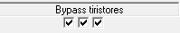

I trecaselle di controllosituato sotto l'indicatore di stato di bypass di tiro, che sono visibili in entrambi vista esterna e il vista interno, consentono di creare guasti di rete in ciascuna delle fasi.